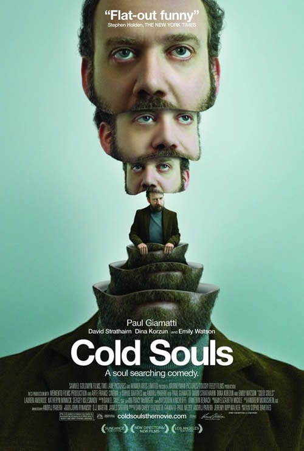

 Sports
حاتم جميل من مواليد 18 سبتمبر 1971، بدأ حياته الفنية في مسرح المدرسة، وعرض على السيناريست أحمد عبد الله المشاركة في أحد أعماله بصفته جاره،
منذ أيام وتنتشر صورة الممثل حاتم جميل عبر مواقع التواصل الاجتماعي، والتعليق عليها واحد وهو "بالله عليك كيف عرفت إني" مع تغيير الموقف والتعديل على الصورة، ولكن من هو حاتم جميل.
Latest

منذ أيام وتنتشر صورة الممثل حاتم جميل عبر مواقع التواصل الاجتماعي، والتعليق عليها واحد وهو "بالله عليك كيف عرفت إني" مع تغيير الموقف والتعديل على الصورة، ولكن من هو حاتم جميل.
حاتم جميل من مواليد 18 سبتمبر 1971، بدأ حياته الفنية في مسرح المدرسة، وعرض على السيناريست أحمد عبد الله المشاركة في أحد أعماله بصفته جاره،

واستكمل طريقه في الفن ولكن في أدوار صغيرة من بينها دوره في فيلم "عبده موتة" و"يانا يا خالتي" و"الفرح" "والزمهلاوية" و"من ضهر راجل" و"عمر الأزرق" ومؤخرا مسلسل "ضد مجهول"
Videos

Relationships